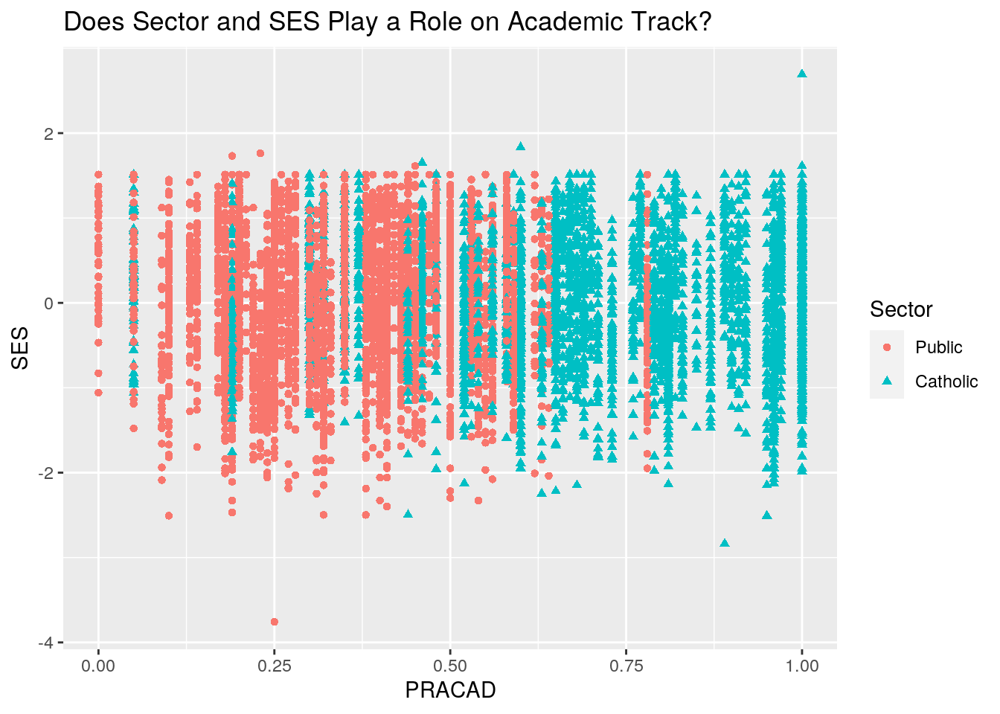

The two datasets that I have chosen are MathAchSchool and MathAchieve. The MathAchieve data was acquired by Steve Walker and the MathAchSchool data was made to accompany the MathAch data. I chose these two datasets because I wanted to see the data and the variables that went into it. In the MathAch data, the varaibles are school (school ID) , minority (yes or no factor), sex (male or female), SES (a numerical vector on how many socioeconomic statuses the student faces), MathAch (a numeric vector of mathematics achievement scores) and MEANSES (a numeric vector of the mean SES for the school). Each row in this dataframe contains information for only one student. In the MathAchSchool data, the variables are school (school ID), size (number of students in the school), sector (public or catholic), PRACAD (a numeric vector giving the percentage of students on the academic track), DISCLIM (a numeric vector measuring the discrimination climate), HIMINTY (0 or 1 factor) and MEANSES (a numeric vector giving the mean SES score).
library(tidyverse)
library(tidyr)
library(dplyr)
library(nlme)
MathAchSchool <- MathAchSchool %>% mutate(School = as.numeric(School))
MathAchieve <- MathAchieve %>% mutate(School = as.numeric(School))
NewMathAch <- MathAchieve %>% full_join(MathAchSchool, by = "School")
print(NewMathAch)## Grouped Data: MathAch ~ SES | School
## School Minority Sex SES MathAch MEANSES.x Size Sector PRACAD DISCLIM
## 1 59 No Female -1.528 5.876 -0.428 1061 Public 0.46 -1.059
## 2 59 No Female -0.588 19.708 -0.428 1061 Public 0.46 -1.059
## 3 59 No Male -0.528 20.349 -0.428 1061 Public 0.46 -1.059
## 4 59 No Male -0.668 8.781 -0.428 1061 Public 0.46 -1.059
## 5 59 No Male -0.158 17.898 -0.428 1061 Public 0.46 -1.059
## 6 59 No Male 0.022 4.583 -0.428 1061 Public 0.46 -1.059
## 7 59 No Female -0.618 -2.832 -0.428 1061 Public 0.46 -1.059
## 8 59 No Male -0.998 0.523 -0.428 1061 Public 0.46 -1.059
## HIMINTY MEANSES.y
## 1 0 -0.219
## 2 0 -0.219
## 3 0 -0.219
## 4 0 -0.219
## 5 0 -0.219
## 6 0 -0.219
## 7 0 -0.219
## 8 0 -0.219
## [ reached 'max' / getOption("max.print") -- omitted 7177 rows ]I chose to run a full join to merge my datasets together. For the MathAch dataset, there were 7185 observations and in the MathAchSchool dataset, there were 160 observations. For the new df(NewMatchAch), there were no observations that were dropped. All the variables from the two datasets merged together to give an overall greater view of the data since the schools in both datasets are correlated. They share the same school ID. The difference is in MathAchieve, it shows every student individually and their minority, sex, SES, etc.
library(tidyverse)
longdata <- NewMathAch %>% pivot_longer(cols = c("MEANSES.x",
"MEANSES.y"))
print(longdata)## # A tibble: 14,370 x 12
## School Minority Sex SES MathAch Size Sector PRACAD DISCLIM HIMINTY
## <dbl> <fct> <fct> <dbl> <dbl> <dbl> <fct> <dbl> <dbl> <fct>
## 1 59 No Fema… -1.53 5.88 1061 Public 0.46 -1.06 0
## 2 59 No Fema… -1.53 5.88 1061 Public 0.46 -1.06 0
## 3 59 No Fema… -0.588 19.7 1061 Public 0.46 -1.06 0
## 4 59 No Fema… -0.588 19.7 1061 Public 0.46 -1.06 0
## 5 59 No Male -0.528 20.3 1061 Public 0.46 -1.06 0
## 6 59 No Male -0.528 20.3 1061 Public 0.46 -1.06 0
## 7 59 No Male -0.668 8.78 1061 Public 0.46 -1.06 0
## 8 59 No Male -0.668 8.78 1061 Public 0.46 -1.06 0
## 9 59 No Male -0.158 17.9 1061 Public 0.46 -1.06 0
## 10 59 No Male -0.158 17.9 1061 Public 0.46 -1.06 0
## # … with 14,360 more rows, and 2 more variables: name <chr>, value <dbl>longdata %>% pivot_wider(names_from = "name", values_from = "value")## # A tibble: 7,185 x 12
## School Minority Sex SES MathAch Size Sector PRACAD DISCLIM HIMINTY
## <dbl> <fct> <fct> <dbl> <dbl> <dbl> <fct> <dbl> <dbl> <fct>
## 1 59 No Fema… -1.53 5.88 1061 Public 0.46 -1.06 0
## 2 59 No Fema… -0.588 19.7 1061 Public 0.46 -1.06 0
## 3 59 No Male -0.528 20.3 1061 Public 0.46 -1.06 0
## 4 59 No Male -0.668 8.78 1061 Public 0.46 -1.06 0
## 5 59 No Male -0.158 17.9 1061 Public 0.46 -1.06 0
## 6 59 No Male 0.022 4.58 1061 Public 0.46 -1.06 0
## 7 59 No Fema… -0.618 -2.83 1061 Public 0.46 -1.06 0
## 8 59 No Male -0.998 0.523 1061 Public 0.46 -1.06 0
## 9 59 No Fema… -0.888 1.53 1061 Public 0.46 -1.06 0
## 10 59 No Male -0.458 21.5 1061 Public 0.46 -1.06 0
## # … with 7,175 more rows, and 2 more variables: MEANSES.x <dbl>,
## # MEANSES.y <dbl>To show both skills of tidying, I made the dataset longer by conjoining the MEANSES.x and MEANSES.y columns together. By doing so, this allowed the data of MEANSES.x and MEANSES.y to be viewed right under each other rather than being six columns apart. I then tidyed the dataset back to the original (but better), since now the two columns are right next to one another.
library(dplyr)
sub_NewMathAch <- NewMathAch %>% mutate(subMEANSES = MEANSES.x -
MEANSES.y)
print(sub_NewMathAch)## Grouped Data: MathAch ~ SES | School
## School Minority Sex SES MathAch MEANSES.x Size Sector PRACAD DISCLIM
## 1 59 No Female -1.528 5.876 -0.428 1061 Public 0.46 -1.059
## 2 59 No Female -0.588 19.708 -0.428 1061 Public 0.46 -1.059
## 3 59 No Male -0.528 20.349 -0.428 1061 Public 0.46 -1.059
## 4 59 No Male -0.668 8.781 -0.428 1061 Public 0.46 -1.059
## 5 59 No Male -0.158 17.898 -0.428 1061 Public 0.46 -1.059
## 6 59 No Male 0.022 4.583 -0.428 1061 Public 0.46 -1.059
## 7 59 No Female -0.618 -2.832 -0.428 1061 Public 0.46 -1.059
## HIMINTY MEANSES.y subMEANSES
## 1 0 -0.219 -0.209
## 2 0 -0.219 -0.209
## 3 0 -0.219 -0.209
## 4 0 -0.219 -0.209
## 5 0 -0.219 -0.209
## 6 0 -0.219 -0.209
## 7 0 -0.219 -0.209
## [ reached 'max' / getOption("max.print") -- omitted 7178 rows ]quantile(sub_NewMathAch$subMEANSES)## 0% 25% 50% 75% 100%
## -1.722 -0.402 0.042 0.392 1.507sub_NewMathAch %>% dplyr::select(Minority, SES, Sector, subMEANSES) %>%
glimpse() %>% arrange(SES)## Rows: 7,185
## Columns: 4
## $ Minority <fct> No, No, No, No, No, No, No, No, No, No, No, No, No, No, No…
## $ SES <dbl> -1.528, -0.588, -0.528, -0.668, -0.158, 0.022, -0.618, -0.…
## $ Sector <fct> Public, Public, Public, Public, Public, Public, Public, Pu…
## $ subMEANSES <dbl> -0.209, -0.209, -0.209, -0.209, -0.209, -0.209, -0.209, -0…## Minority SES Sector subMEANSES
## 1 No -3.758 Public 0.195
## 2 Yes -2.838 Catholic 0.301
## 3 Yes -2.508 Public 0.232
## 4 Yes -2.508 Catholic -0.835
## 5 Yes -2.498 Public -0.623
## 6 Yes -2.498 Public -0.357
## 7 Yes -2.498 Catholic -0.310
## 8 Yes -2.468 Public -0.118
## 9 Yes -2.398 Public -0.484
## 10 Yes -2.328 Public -0.118
## 11 No -2.328 Public 0.238
## 12 Yes -2.328 Public -0.749
## 13 Yes -2.298 Public 0.225
## 14 Yes -2.248 Public -0.531
## 15 No -2.248 Catholic -0.079
## 16 No -2.218 Catholic -0.402
## 17 Yes -2.218 Public 0.225
## 18 Yes -2.188 Public -0.229
## 19 No -2.188 Public -0.879
## 20 No -2.178 Public -0.879
## 21 Yes -2.148 Public -0.623
## 22 Yes -2.148 Catholic -0.519
## 23 Yes -2.148 Catholic -0.835
## 24 Yes -2.138 Catholic -0.788
## 25 Yes -2.128 Catholic -1.520
## [ reached 'max' / getOption("max.print") -- omitted 7160 rows ]sub_NewMathAch %>% filter(sub_NewMathAch$Minority == "Yes") %>%
group_by(Sector) %>% count(Sector, sort = TRUE)## # A tibble: 2 x 2
## # Groups: Sector [2]
## Sector n
## <fct> <int>
## 1 Public 1095
## 2 Catholic 879submean <- sub_NewMathAch %>% group_by(Minority, Sector) %>%
summarize(mean(subMEANSES, na.rm = T))
print(submean)## # A tibble: 4 x 3
## # Groups: Minority [2]
## Minority Sector `mean(subMEANSES, na.rm = T)`
## <fct> <fct> <dbl>
## 1 No Public 0.224
## 2 No Catholic -0.0576
## 3 Yes Public -0.0837
## 4 Yes Catholic -0.420sub_NewMathAch %>% group_by(Sex, MathAch) %>% summarize(min(SES))## # A tibble: 6,511 x 3
## # Groups: Sex [2]
## Sex MathAch `min(SES)`
## <fct> <dbl> <dbl>
## 1 Male -2.83 -0.878
## 2 Male -2.72 -1.12
## 3 Male -2.66 0.712
## 4 Male -2.63 -0.858
## 5 Male -2.56 -0.188
## 6 Male -2.54 -0.368
## 7 Male -2.54 -0.948
## 8 Male -2.5 0.202
## 9 Male -2.50 0.202
## 10 Male -2.48 0.202
## # … with 6,501 more rowssd(sub_NewMathAch$SES)## [1] 0.7793552sub_NewMathAch %>% group_by(School) %>% summarize(Size = n())## # A tibble: 160 x 2
## School Size
## <dbl> <int>
## 1 1 14
## 2 2 32
## 3 3 48
## 4 4 37
## 5 5 53
## 6 6 25
## 7 7 44
## 8 8 34
## 9 9 51
## 10 10 30
## # … with 150 more rowscormat <- sub_NewMathAch %>% select_if(is.numeric) %>% cor(use = "pair")
print(cormat)## School SES MathAch MEANSES.x Size
## School 1.00000000 0.240930019 0.263737499 0.454034510 0.045987391
## SES 0.24093002 1.000000000 0.360755628 0.530622075 -0.001226933
## MathAch 0.26373750 0.360755628 1.000000000 0.343722080 0.006382007
## MEANSES.x 0.45403451 0.530622075 0.343722080 1.000000000 -0.002259687
## Size 0.04598739 -0.001226933 0.006382007 -0.002259687 1.000000000
## PRACAD -0.19319181 -0.004426808 -0.019948424 -0.008366211 -0.329598263
## DISCLIM 0.07166722 0.003102335 -0.012160049 0.005825166 0.374672103
## MEANSES.y -0.06078472 0.038770798 -0.001452268 0.072993824 -0.172568599
## subMEANSES 0.37949415 0.363256280 0.254723158 0.684638943 0.124451031
## PRACAD DISCLIM MEANSES.y subMEANSES
## School -0.193191808 0.071667215 -0.060784722 0.3794941
## SES -0.004426808 0.003102335 0.038770798 0.3632563
## MathAch -0.019948424 -0.012160049 -0.001452268 0.2547232
## MEANSES.x -0.008366211 0.005825166 0.072993824 0.6846389
## Size -0.329598263 0.374672103 -0.172568599 0.1244510
## PRACAD 1.000000000 -0.634134413 0.660491916 -0.4888827
## DISCLIM -0.634134413 1.000000000 -0.381807207 0.2833358
## MEANSES.y 0.660491916 -0.381807207 1.000000000 -0.6769636
## subMEANSES -0.488882734 0.283335791 -0.676963590 1.0000000sub_NewMathAch %>% group_by(Minority) %>% summarize(max(SES))## # A tibble: 2 x 2
## Minority `max(SES)`
## <fct> <dbl>
## 1 No 1.65
## 2 Yes 2.69The first summary statistic (SS) I created was to generate a new variable that was the difference between MEANSES.x and MEANSES.y by using the mutate function. Then I used the quantile function to see the quantiles corresponding to the given numeric vector that was just created. The third SS was done to select the following variables: Minority, SES, Sector and subMEANSES and to sort the data frame by SES. This was completed to see if Minority and Sector had a factor of SES. The next SS was a simple one, it was just to see how many students were a minority in the type of school (Public or Catholic). The fifth SS was to group by Minority and Sector and the mean of the subtracted MEANSES values.
The sixth SS was created to group by Sex and MathAch (a numeric vector of mathematics achievement scores) and see the minimum SES values. The next SS was to see what the standard deviation of the values in SES. The eigthth SS was to see the number of observations (the size) in each school. The next SS was to compute matrices between all the numeric variables in the dataset. The last SS was to was created to group by Minority and see the max SES values that are correlated with the minority status.
ggplot(sub_NewMathAch, aes(x = Minority, y = MathAch, fill = Sex)) +
scale_y_continuous(name = "MathAch Scores", limits = c(0,
25)) + geom_bar(aes(y = MathAch), stat = "summary", position = "dodge") +
geom_errorbar(stat = "summary", position = "dodge") + ggtitle("Does Minority and Sex Affect MathAch Scores?") +
scale_fill_brewer(palette = "Oranges")ggplot() + geom_point(data = sub_NewMathAch, aes(x = PRACAD,
y = SES, shape = Sector, color = Sector)) + ggtitle("Does Sector and SES Play a Role on Academic Track?")
sub_NewMathAch %>% select_if(is.numeric) %>% cor %>% as.data.frame %>%
rownames_to_column %>% pivot_longer(-1) %>% ggplot(aes(rowname,
name, fill = value)) + geom_tile() + geom_text(aes(label = round(value,
2))) + scale_fill_gradient2(low = "yellow", mid = "pink",
high = "blue") + xlab("") + ylab("")For the first plot, I wanted to see if there was an apparent trend for being a minority or not. Additionally, I wanted to see if sex while being a minority played a role on MathAch scores. From this plot, it can be concluded that if you are a minority, your scores will be lower. It also tells you that sex plays a role on your scores. In both scenarios, minority or not, females scored lower in general. If you are a female minority, your scores averaged out to be the lowest. Non-minority males score the highest.
The second plot depicts the type of school you go to, SES (a numeric vector of socio-economic status), and PRACAD (a numeric vector giving the percentage of students on the academic track). For SES, there isn't a clear trend/affect on PRCAD. The values all range with how on track you are, no clear relationship is shown. On the otherhand, Sector does seem to have an affect on PRACAD. Those who attend a Catholic school seem to be more on track than those that attend Public school.
The correlation heatmap shows you all the correlations between the multiple, numeric vairables in the dataset. When the same variables align with themselves, the correlation is 1. This is because they are the same values so their correlation value is a perfect 1. This is also because the heatmap is diagonally symmetrical. All the values in this heatmap ranges from -1 to 1, values that are closer to zero means that there is no linear trend between the two variables. Values closer to 1 means that they are more related. A correlation closer to -1 is similar, but instead of both increasing one variable will decrease as the other increases. Values above 0 means that they are positively correlated while values below 0 means that they are negatively correlated.
library(cluster)
pam1 <- sub_NewMathAch %>% pam(k = 6)
print(pam1)## Medoids:
## ID School Minority Sex SES MathAch MEANSES.x Size Sector PRACAD
## [1,] 2129 81 1 1 0.702 14.653 0.666 1118 2 0.77
## [2,] 2736 102 1 1 0.432 12.909 -0.085 1453 1 0.25
## [3,] 6296 54 2 2 -0.858 12.167 0.161 375 2 0.91
## [4,] 1691 83 1 1 -0.438 13.207 -0.296 720 2 0.60
## [5,] 4360 58 2 2 -0.688 11.178 -0.516 1881 1 0.33
## [6,] 6834 112 1 2 0.162 14.464 0.259 2403 1 0.39
## DISCLIM HIMINTY MEANSES.y subMEANSES
## [1,] -1.286 1 0.426 0.240
## [2,] 2.756 2 -0.670 0.585
## [3,] -1.521 1 0.411 -0.250
## [4,] -0.070 2 0.028 -0.324
## [5,] 0.840 1 0.134 -0.650
## [6,] 1.024 1 0.013 0.246
## Clustering vector:
## [1] 1 1 1 1 1 1 1 1 1 1 1 1 1 1 1 1 1 1 1 1 1 1 1 1 1 1 1 1 1 1 1 1 1 1 1 1 1
## [38] 1 1 1 1 1 1 1 1 1 1 2 2 2 2 2 2 2 2 2 2 2 2 2 2 2 2 2 2 2 2 2 2 2 2 2 3 3
## [75] 3 3 3 3 3 3 3 3 3 3 3 3 3 3 3 3 3 3 3 3 3 3 3 3 3 3
## [ reached getOption("max.print") -- omitted 7085 entries ]
## Objective function:
## build swap
## 119.6837 109.0092
##
## Available components:
## [1] "medoids" "id.med" "clustering" "objective" "isolation"
## [6] "clusinfo" "silinfo" "diss" "call" "data"clust <- sub_NewMathAch %>% mutate(cluster = as.factor(pam1$clustering))
clust %>% ggplot(aes(School, DISCLIM, color = Minority, shape = cluster)) +
geom_point() + ggtitle(" Cluster on Discrimination Climate, School and Minority Status")From viewing the clustering plot, there seems to be an almost even distrubution among the whole plot. The discrimination climate (DISCLIM) variable has no heavily concentrated regions in any of the schools. I chose to cluster with the school and minority variables since I thought the DISCLIM values would be heavily concentrated with the schools that have more students who are minorities, but this doesn't seem like it's the case.
## R version 3.6.1 (2019-07-05)
## Platform: x86_64-pc-linux-gnu (64-bit)
## Running under: Ubuntu 18.04.5 LTS
##
## Matrix products: default
## BLAS: /stor/system/opt/R/R-3.6.1/lib/R/lib/libRblas.so
## LAPACK: /stor/system/opt/R/R-3.6.1/lib/R/lib/libRlapack.so
##
## locale:
## [1] LC_CTYPE=en_US.UTF-8 LC_NUMERIC=C
## [3] LC_TIME=en_US.UTF-8 LC_COLLATE=en_US.UTF-8
## [5] LC_MONETARY=en_US.UTF-8 LC_MESSAGES=en_US.UTF-8
## [7] LC_PAPER=en_US.UTF-8 LC_NAME=C
## [9] LC_ADDRESS=C LC_TELEPHONE=C
## [11] LC_MEASUREMENT=en_US.UTF-8 LC_IDENTIFICATION=C
##
## attached base packages:
## [1] stats graphics grDevices utils datasets methods base
##
## other attached packages:
## [1] cluster_2.1.0 nlme_3.1-148 forcats_0.5.0 stringr_1.4.0
## [5] dplyr_1.0.1 purrr_0.3.4 readr_1.3.1 tidyr_1.1.1
## [9] tibble_3.0.3 ggplot2_3.3.2 tidyverse_1.3.0
##
## loaded via a namespace (and not attached):
## [1] tidyselect_1.1.0 xfun_0.16 lattice_0.20-41 haven_2.3.1
## [5] colorspace_1.4-1 vctrs_0.3.2 generics_0.0.2 htmltools_0.5.0
## [9] yaml_2.2.1 utf8_1.1.4 blob_1.2.1 rlang_0.4.7
## [13] pillar_1.4.6 glue_1.4.2 withr_2.2.0 DBI_1.1.0
## [17] RColorBrewer_1.1-2 dbplyr_1.4.4 modelr_0.1.8 readxl_1.3.1
## [21] lifecycle_0.2.0 munsell_0.5.0 blogdown_0.20 gtable_0.3.0
## [25] cellranger_1.1.0 rvest_0.3.6 evaluate_0.14 labeling_0.3
## [29] knitr_1.29 fansi_0.4.1 broom_0.7.0 Rcpp_1.0.5
## [33] scales_1.1.1 backports_1.1.8 formatR_1.7 jsonlite_1.7.0
## [37] farver_2.0.3 fs_1.5.0 hms_0.5.3 digest_0.6.25
## [41] stringi_1.5.3 bookdown_0.20 grid_3.6.1 cli_2.0.2
## [45] tools_3.6.1 magrittr_1.5 crayon_1.3.4 pkgconfig_2.0.3
## [49] ellipsis_0.3.1 xml2_1.3.2 reprex_0.3.0 lubridate_1.7.9
## [53] assertthat_0.2.1 rmarkdown_2.3 httr_1.4.2 rstudioapi_0.11
## [57] R6_2.4.1 compiler_3.6.1## [1] "2020-12-03 11:41:36 CST"## sysname
## "Linux"
## release
## "4.15.0-117-generic"
## version
## "#118-Ubuntu SMP Fri Sep 4 20:02:41 UTC 2020"
## nodename
## "educcomp04.ccbb.utexas.edu"
## machine
## "x86_64"
## login
## "unknown"
## user
## "vtl269"
## effective_user
## "vtl269"